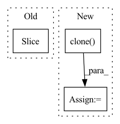

Pattern ID :32168

Before Change
if pred_model is not None:
pred_model.eval()
with torch.no_grad():
in_traj = in_traj[:context_frames].to(device).unsqueeze(dim=0) // [1, in_l, c, h, w]
pr_traj, _ = pred_model(in_traj, pred_frames, actions=actions) // [1, pred_l, c, h, w]
pr_traj = torch.cat([in_traj, pr_traj], dim=1) // [1, in_l + pred_l, c, h, w]
pr_traj_vis = dataset.postprocess(pr_traj.squeeze(dim=0)) // [in_l + pred_l, h, w, c]
After Change
gt_rgb_vis = dataset.postprocess(data["frames"][:context_frames + pred_frames])
if colorized is not None:
colorized = colorized.clone()
gt_colorized_vis = dataset.postprocess(colorized) // [in_l, h, w, c]
else:
gt_colorized_vis = None
In pattern: SUPERPATTERN
Frequency: 3
Non-data size: 3
Instances
Fragment ID: 94124830
Project Name: ais-bonn/vp-suite
Commit Name: 73d8831f0de700411f5099a8ef9ebecf3104d875
Time: 2022-02-17
Author: boltres@ais.uni-bonn.de
File Name: vp_suite/utils/visualization.py
M Class Name: AnonimousClass
N Class Name: AnonimousClass
M Method Name: visualize_vid(9)
N Method Name: visualize_vid(9)
M Parent Class:
N Parent Class:
M File Name: vp_suite/utils/visualization.py
N File Name: vp_suite/utils/visualization.py
M Start Line: 108
M End Line: 120
N Start Line: 108
N End Line: 129
'>
Before Change
if reverse:
img_data = torch.flip(img_data, dims=[1])
actions = torch.flip(actions, dims=[1])
input_frames = img_data if self.NEEDS_COMPLETE_INPUT else img_data[:, :config["context_frames"]]
target_frames = img_data[:, config["context_frames"]: config["context_frames"] + config["pred_frames"]]
return input_frames, target_frames, actions
After Change
T_in, T_pred = config["context_frames"], config["pred_frames"]
if self.NEEDS_COMPLETE_INPUT:
input_frames = img_data[:, :T_in+T_pred]
target_frames = input_frames[:, T_in:].clone()
else:
input_frames, target_frames = torch.split(img_data[:, :T_in+T_pred], [T_in, T_pred], dim=1)
return input_frames, target_frames, actions
'>
Fragment ID: 94124846
Project Name: ais-bonn/vp-suite
Commit Name: 9c2db5cd3e31fa835977445b4eee67b5737b91b7
Time: 2022-02-18
Author: boltres@ais.uni-bonn.de
File Name: vp_suite/base/base_model.py
M Class Name: VideoPredictionModel
N Class Name: VideoPredictionModel
M Method Name: unpack_data(4)
N Method Name: unpack_data(4)
M Parent Class: nn.Module
N Parent Class: nn.Module
M File Name: vp_suite/base/base_model.py
N File Name: vp_suite/base/base_model.py
M Start Line: 100
M End Line: 106
N Start Line: 100
N End Line: 111
'>
Before Change
piece = spec[:, start:end]
if i == num:
piece = spec[:, start:]
freq(piece)
time(piece)
After Change
def augment(in_spec, chunk_size=30, freq_mask_param=10, time_mask_param=6):
spec = torch.clone(in_spec)
freq_mask = torchaudio.transforms.FrequencyMasking(freq_mask_param=freq_mask_param, iid_masks=True)
time_mask = torchaudio.transforms.TimeMasking(time_mask_param=time_mask_param, iid_masks=True)
'>
Fragment ID: 94124831
Project Name: ivankunyankin/quartznet-asr
Commit Name: 28f999e7cfbefb66c9545f32e76a7454a7432aac
Time: 2021-07-01
Author: IKunyankin@gmail.com
File Name: utils.py
M Class Name: AnonimousClass
N Class Name: AnonimousClass
M Method Name: augment(4)
N Method Name: augment(4)
M Parent Class:
N Parent Class:
M File Name: utils.py
N File Name: utils.py
M Start Line: 57
M End Line: 82
N Start Line: 57
N End Line: 74